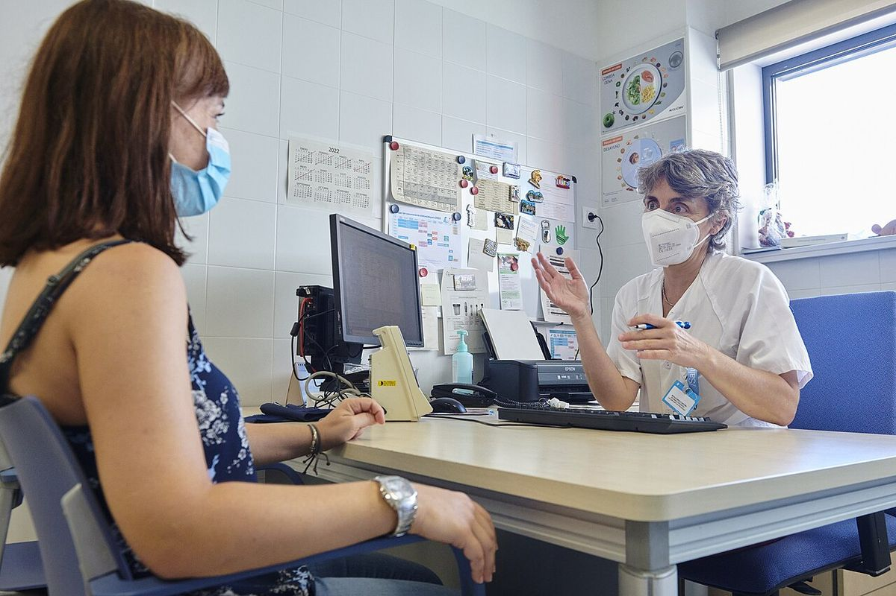

Hipertensión arterial
La hipertensión casi nunca da síntomas y es el principal factor de riesgo de ictus e infarto. Medirla bien, confirmar el diagnóstico fuera de la consulta y ayudar al paciente a mantener el tratamiento es trabajo central de la enfermera de primaria.
Revisado en noviembre de 2026 · Fuentes al final de la página

.jpg){kind=link}
Clasificación de la Sociedad Europea de Cardiología (2024)
| Categoría | En consulta (mmHg) |
|---|---|
| No elevada | <120/70 |
| Elevada | 120–139 / 70–89 |
| Hipertensión | ≥140/90 |
La categoría «elevada» es nueva en 2024: identifica a personas con más riesgo que se benefician de cambios de estilo de vida y, si su riesgo cardiovascular es alto, también de fármacos.
Confirmar fuera de la consulta
Las guías piden confirmar el diagnóstico con medidas fuera de la consulta, para detectar la hipertensión de bata blanca y la enmascarada.
- Automedida en casa (AMPA): con un aparato de brazo validado, durante 7 días (mínimo 3), dos lecturas por la mañana y dos por la noche, separadas un minuto, antes de los fármacos y de comer. Se descarta el primer día. Una media de 135/85 o más es hipertensión.
- Monitorización de 24 horas (MAPA): una media de 24 horas de 130/80 o más es hipertensión.
La técnica correcta de medida en consulta está en la ficha de toma de la tensión arterial.
Objetivo de control
En la mayoría de los pacientes tratados, la guía europea de 2024 propone una sistólica entre 120 y 129 mmHg si se tolera bien. En personas mayores frágiles o que no lo toleran, el objetivo es la cifra más baja que sea razonablemente alcanzable.
Estilo de vida
- Sal: no más de unos 5 gramos al día (una cucharadita), contando la que ya llevan el pan, los embutidos, las conservas y los precocinados.
- Dieta de tipo mediterráneo, rica en verduras, fruta, legumbres y frutos secos, que además aporta potasio.
- Actividad física: al menos 150 minutos semanales de ejercicio aeróbico moderado y ejercicios de fuerza 2 o 3 días por semana.
- Peso, alcohol (cuanto menos, mejor) y tabaco (dejarlo del todo).
Fármacos y educación
- La mayoría de los pacientes necesita dos fármacos, y se recomienda empezar con una combinación en un solo comprimido (por ejemplo, un IECA o un ARA II con un calcioantagonista o un diurético).
- La falta de adherencia es la causa más frecuente de mal control: pregunta sin juzgar, simplifica la pauta y explica para qué sirve cada fármaco.
- Vigila efectos frecuentes: tos seca con los IECA, edemas en los tobillos con los calcioantagonistas, mareo al levantarse en personas mayores.
- Recuerda que los antiinflamatorios suben la tensión y pueden dañar el riñón junto con IECA, ARA II y diuréticos.